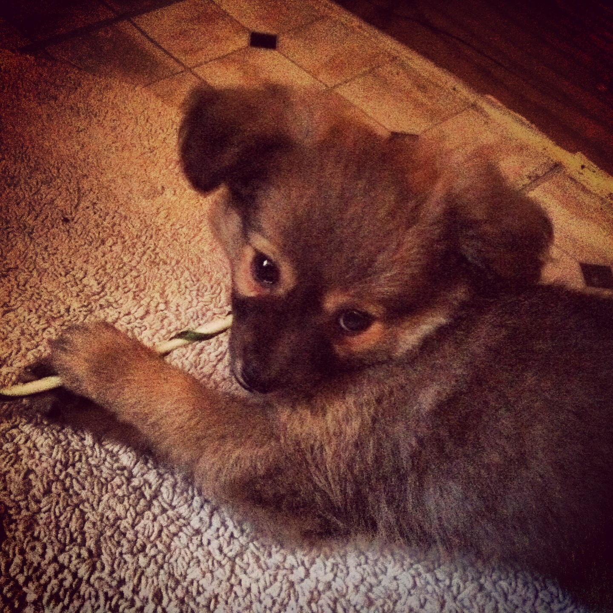

Ellie was born on October 31st (Halloween!), 2013. She is from my mom's neighbor's doggo who had a litter. She is part pomeranian, from her dad, and her mom is a terrier mix. She is told (a lot) that she looks like she is part fox!
Ellie loves to play, mostly with toys. She enjoys chasing tennis balls and other things that fly fast. She also enjoys playing tug, but isn't very destructive after winning the match. She also loves long walks, and long naps. She loves treats so much that she waits until night time to touch her regular doggy food, just to be sure that any time any human food is available, she isn't too full to enjoy it. Ellie's favorite toy is her Dragon Friend, who we recently had to replace due to being so worn out. Ellie gets confused as to our expectations from her when we take her to the dog park, so most of the time she observes the other dogs there.
Here are a few of her pictures!
